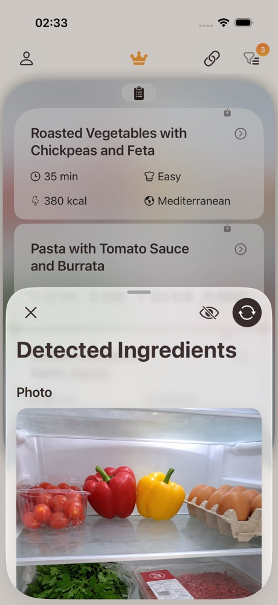
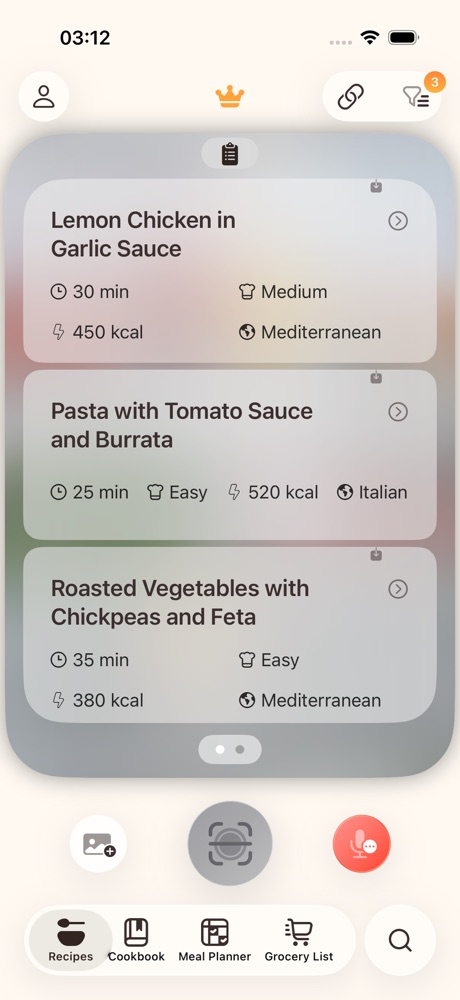
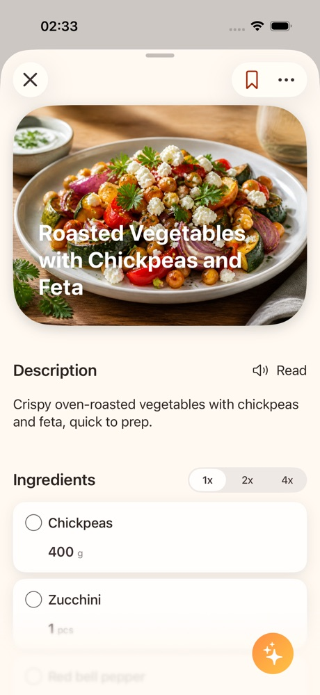

ReciPics
ReciPics
The fridge is full, but nothing in it looks like dinner. Take a photo of the ingredients you have with ReciPics and get recipe ideas that use several of them. No photo at hand? Say what you have instead.
View on the App Store


Screens from the app with example content (test version). The fridge photo and recipe photos are AI-generated examples; in the app, suggestions come from your own photo and may differ. Calories and nutrition are estimates.
Half a pepper, a few eggs, a bag of spinach, some leftover rice. Looking up a recipe for each of them takes longer than the cooking. ReciPics starts from what is already in front of you and suggests what you could make with it.
Before you snap, choose a meal type (breakfast, brunch, lunch, dinner, dessert, snack or drinks) and a dietary preference, for example vegetarian, vegan, gluten-free, lactose-free or keto. The suggestions follow your choice. Diet filters are a guide, not a guarantee for allergies or medical diets.
In your profile you can also add allergies and dietary restrictions (health-related information, shared only with your consent). If you agree to share them, ReciPics takes them into account when it suggests recipes. AI can make mistakes: always check ingredients yourself for allergies or intolerances.
No. ReciPics only needs to know which ingredients you have, not how much of each. The full recipe then lists amounts, so check that you have enough before you start.
Yes. Remove ingredients you don't want to use from the list of detected ingredients before you get new suggestions, and choose a dietary preference such as vegetarian, vegan or gluten-free. Allergies and dietary restrictions can go in your profile. Always check ingredients yourself for allergies or intolerances.
ReciPics tries to list only items it can identify clearly. A sharp, well-lit photo works best; a blurry or dark photo may not be recognised. AI can make mistakes, so check the list and add anything it missed.
No. Recognising ingredients and suggesting recipes needs an internet connection. Recipes you have saved are stored on your iPhone.
Yes. ReciPics is an iPhone app for iOS 26 or later. There is no Android or web version.
Found a recipe online instead? Recipe from a link shows just the recipe in your browser · Save recipes from websites
Missing one ingredient for a recipe? Ingredient substitutes in your recipe
Suggestions from photos, voice and text count toward the app's AI allowance, which is limited without Premium.
To suggest recipes, your photo, voice recording or text is sent to our servers and service providers, including our AI provider OpenAI (USA); see Privacy.
Get ReciPics on the App StoreFor iPhone with iOS 26 or later.